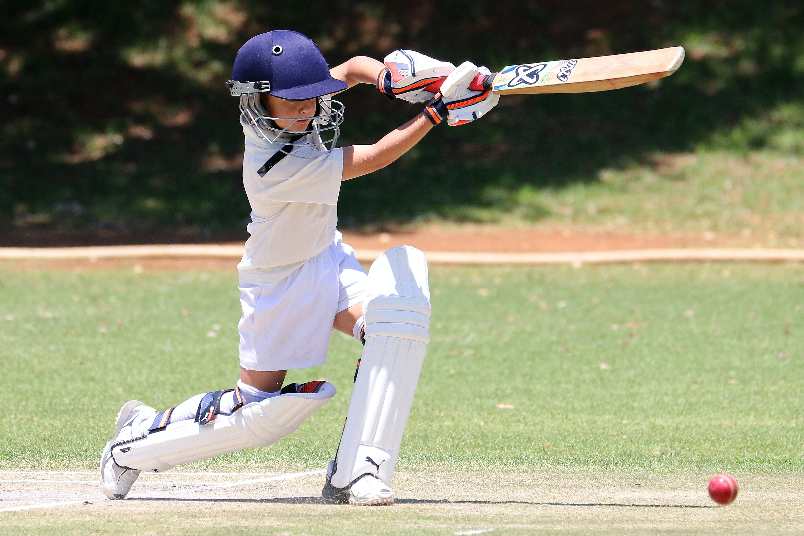

Cricket Information
Welcome to our Cricket Academy! We are dedicated to providing top-notch cricket coaching and training for aspiring cricketers of all ages and skill levels.
Cricket can be played for competition or for fun.Cricket is a good sport for developing overall fitness,
stamina and hand eye coordination.
RSA Cricket Program involves cricket practices under expert Coaches focuses on:
|
|
- Endurance and stamina
- Balance and coordination
- Physical fitness
- Improving hand-eye coordination.
- Team skills
- Social skills such as cooperation, communication and learning how to cope with winning and losing
- Social interaction – it’s a great way to meet new people and make new friends.
- Team Spirit
Our Services
- Professional coaching from experienced cricket coaches
- State-of-the-art facilities and equipment
- Regular practice sessions and matches
- Individualized training programs
- Fitness and conditioning programs
|

|